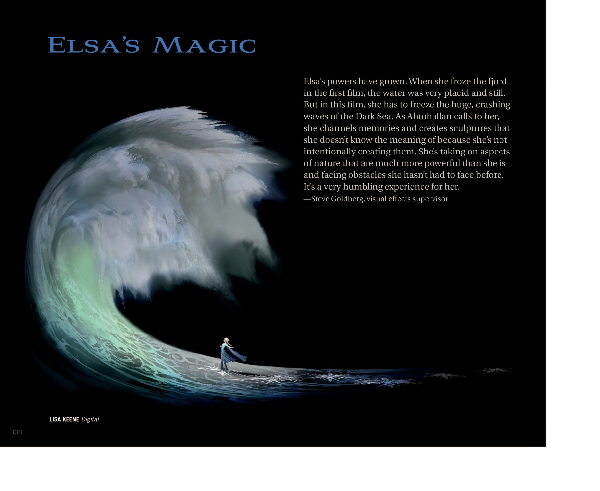

冰雪魔法 · 能力与清单
📖 这一页讲什么
艾莎的冰雪魔法不是简单的「放冰」，而是一套能造物、能控天气、能创造生命的完整能力体系。这一页用清单形式梳理她的主要能力、已知限制，以及最关键的「情感联动」规则。


🏰 造物与构造：冰宫、冰桥、冰晶
艾莎能在顷刻间凭空造出宏伟的冰雪宫殿、冰桥、冰晶楼梯与冰制家具。北山的冰雪宫殿是她最著名的作品——六边形雪花结构、冰蕾丝披风、棱镜般流光，是「做自己」的视觉化。
🌨️ 控雪与天气：降雪、暴风雪、永冬
她能降雪、制造暴风雪、甚至用一次失控让整个王国进入永冬。《Let It Go》里那句「让暴风雪肆虐吧」，不是修辞，是字面意义的天气操控。
⛄ 创造生命：雪宝、棉花糖、雪马
艾莎的魔法能创造「活物」：会说话爱夏天的雪宝（Olaf）、守护冰宫的巨兽棉花糖（Marshmallow）、以及 F2 里带安娜穿越怒海的雪马。这些造物有性格、有情绪，说明她的魔法不只是「冰」，而是「生命」。
🪞 情感联动：魔法是情绪的镜子
这是艾莎魔法最核心的规则：恐惧时魔法失控伤人，愤怒时制造寒冬，被爱接纳时则温柔如初雪。所以「掌控魔法」的本质是「安顿内心」——这也是为什么电影的解药不是「压制」，而是「面对」。
🌉 第五元素：沟通与连接
成为第五元素后，艾莎的能力从「制造冰雪」升维为「连接人类与自然」：她能与四种自然之灵沟通、平息被惊扰的魔法森林、解读水的记忆。这是她能力的终极形态——不是更强大的魔法，而是更深的联结。
已知限制：魔法与情绪高度联动（情绪失控即魔法失控）；F1 时期她对「冰造物离体后能否独立存活」尚无完全认知（雪宝在夏天会融化，安娜送他专属小云朵才解决）。
📖 设定集：Elsa's Magic 章节
《The Art of Frozen II》用整整一个章节（Elsa's Magic）拆解艾莎的魔法在续集中的进化。视觉特效总监 Steve Goldberg 这样描述她力量的成长：
"Elsa's powers have grown. When she froze the fjord in the first film, the water was very placid and still. But in this film, she has to freeze the huge, crashing waves of the Dark Sea. As Ahtohallan calls to her, she channels memories and creates sculptures that she doesn't know the meaning of because she's not intentionally creating them. She's taking on aspects of nature that are much more powerful than she is and facing obstacles she hasn't had to face before. It's a very humbling experience for her."
—— Steve Goldberg，视觉特效总监（visual effects supervisor） · 《The Art of Frozen II》p.Elsa's Magic 章节


这段访谈揭示了艾莎魔法的一个关键转变：从 F1「控制平静水面」到 F2「征服 Dark Sea 巨浪」，她的力量在量级上飞跃；但更重要的是「非有意创造记忆雕塑」——她开始成为记忆的通道，而非单纯的施法者。这正是她走向「第五元素」的前兆：魔法不再是「她拥有的东西」，而是「流经她的东西」。